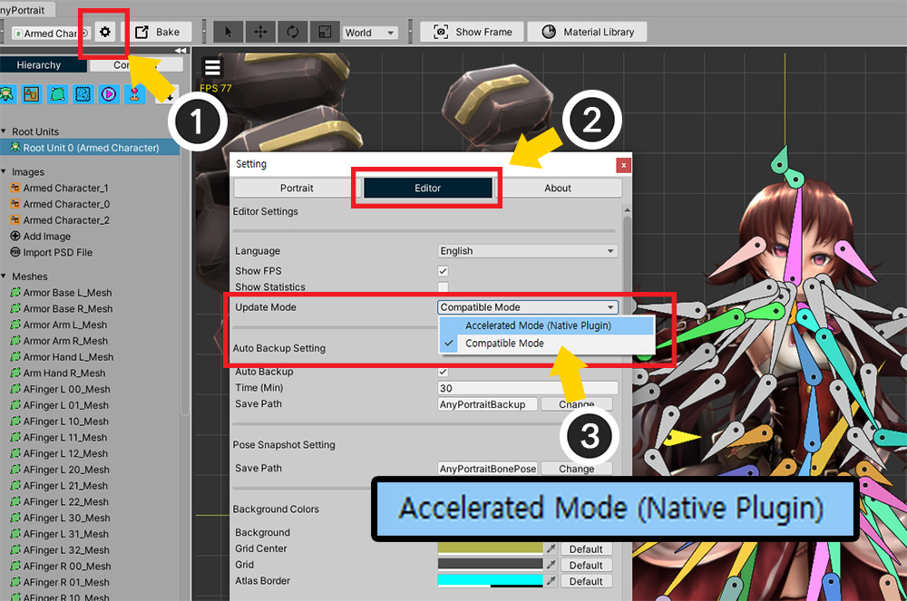
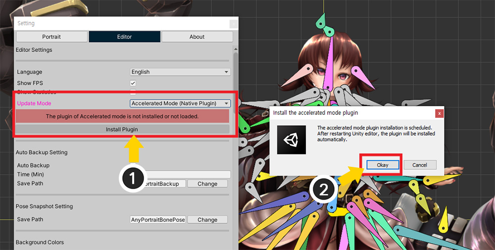
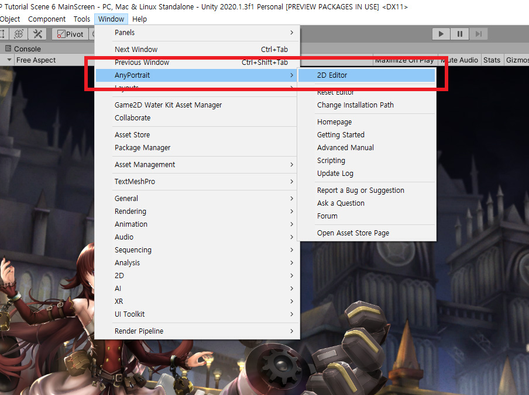
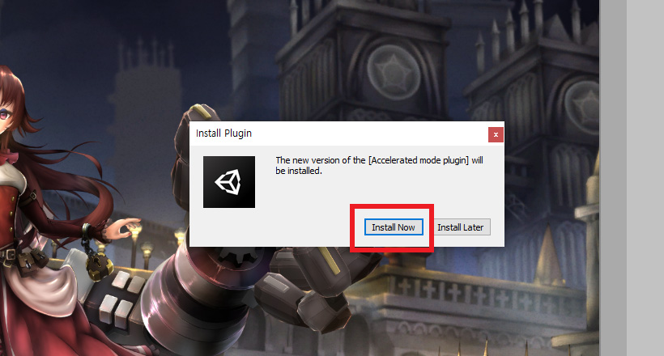
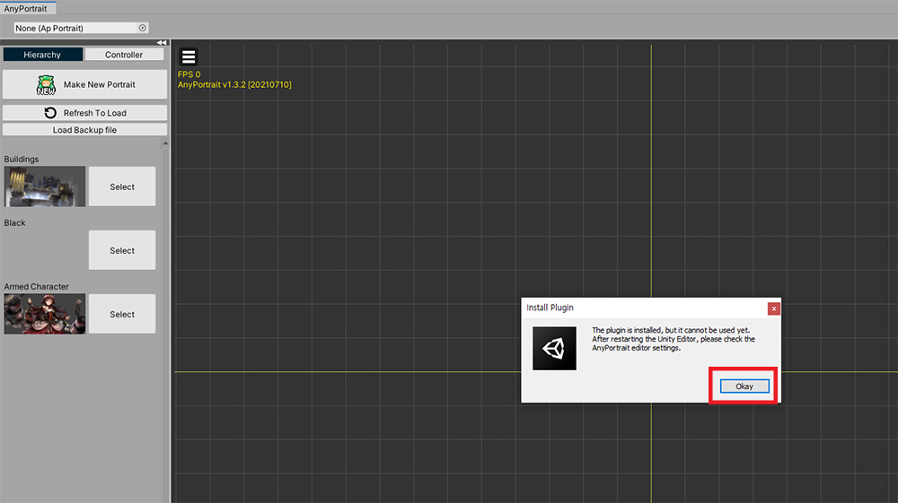
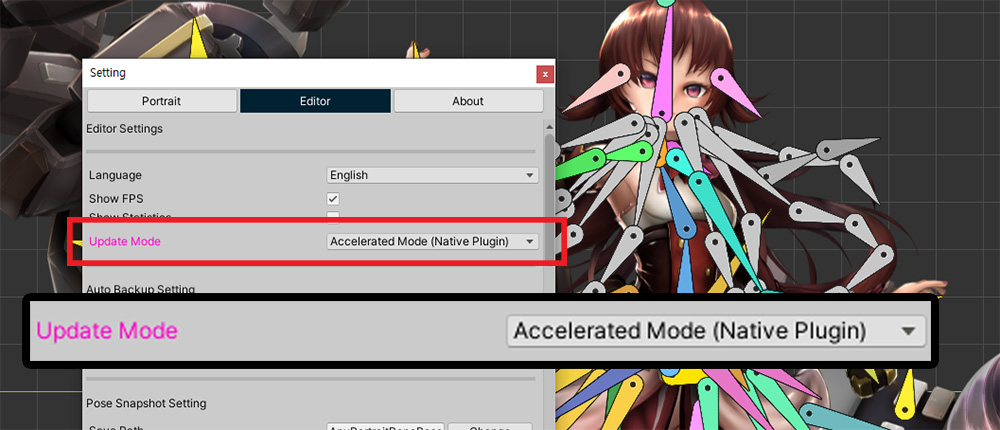
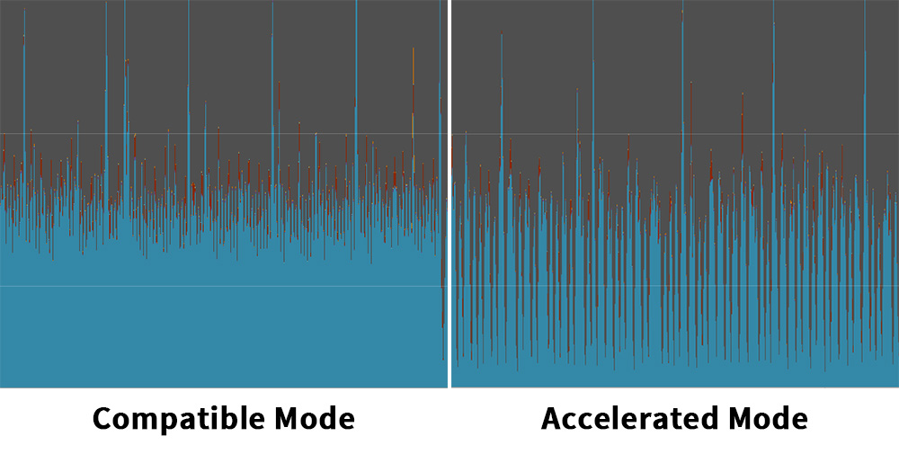
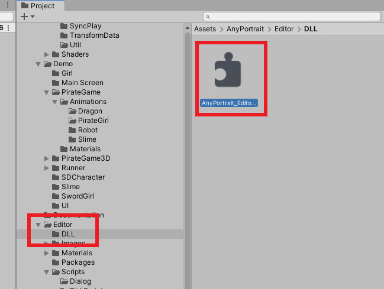
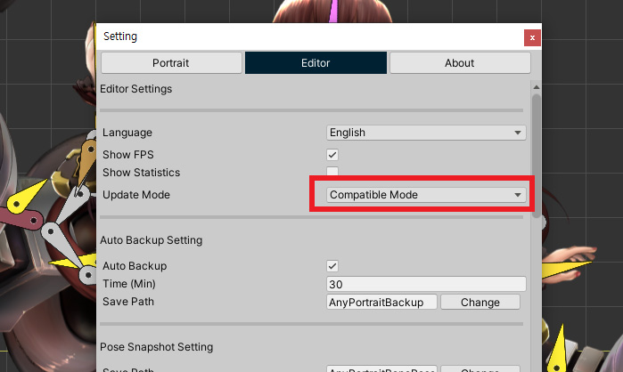

AnyPortrait > マニュアル > 加速モード
加速モード
1.3.2
「Unityの拡張アセット」という制約を克服し、「AnyPortraitエディタ」の性能を高めるために私たちのチームは、様々な方法を試してみています。
このページで紹介する「加速モード（Accelerated Mode）」は、その努力の一環として開発されたものです。
注意
「加速モード」は、実験的な機能であり、実行環境によっては動作しない場合があります。
また、Unityエディタのバージョンや実行環境によっては、パフォーマンスが大幅に改善されない場合があります。
私たちのチームにフィードバックをいただければ、引き続き改善します。
加速モードでは、現在の「64ビット環境のWindowsとMac OS」のみをサポートします。
「加速モードのプラグイン」をインストール
「加速モード」は、Unityの「Native Plugin」を利用して開発されました。
Unityエンジンの特性上、多少複雑なインストール手順が必要です。
下の説明を注意深くご覧あれください。

(1) AnyPortraitエディタの「設定ダイアログ」を開きます。
(2) 「Editorタブ」を押すと、「Update Mode」の項目が追加されたことを見ることができます。
(3) エディタのアップデート方式を「互換モード（Compatible Mode）」と「加速モード（Accelerated Mode）」の中から選択することができます。
基本的には「互換モード」が選択されていることです。
「加速モード（Accelerated Mode）」を選択してみましょう。

「加速モード」に変更すると、上記のような警告メッセージと一緒にインストールボタンが表示されます。
「加速モード」をサポートしている別の"プラグイン"がインストールされていない場合、「加速モード」が動作していないからです。
(1)「Install Plugin」ボタンを押します。
(2) プラグインがすぐにインストールされず、Unityエディタを最初に再起動しなければならないというメッセージが表示されます。「Okayボタン」を押します。

Unityエディタを再起動してAnyPortraitエディタを開きます。

AnyPortraitエディタが開かれる前に加速モードのプラグインがインストールされるかどうかを尋ねるダイアログが表示されます。
「Install Now」を押して、プラグインをインストールします。

プラグインがインストールされると、AnyPortraitエディタが開き、インストールの結果のメッセージが表示されます。
ただし、「Native Plugin」の特性上、インストール後に以下のようなさまざまな状況が発生する可能性があります。
- インストールが成功されてすぐに、「加速モード」が動作します。
- インストールは成功したが、プラグインが動作することができない状態です。Unityエディタを再起動する必要があります。
- インストールに失敗しており、「加速モードのプラグイン」がサポートされていない環境です。
上の画像の場合は、インストールが成功したが、Unityエディタを再起動する必要があり、状況です。
Unityエディタを再起動し、再AnyPortaitエディタを開いてみましょう。

AnyPortraitエディタの「設定ダイアログ」の「Editorタブ」を開きます。
もしプラグインが正常にインストールができたら、「加速モード」が有効にされたことを見ることができます。

加速モードでは、UIを除くアニメーションやモディファイヤの処理性能が向上します。
上記の場合、エディタの最小FPSが互換モードに比べて大きく減少したことを見ることができます。
ただし、Unityエディタのバージョンや環境によっては異なる結果が表示されることがあります。
互換モードや加速モードの両方を使用して、ご覧になって、自分に合った更新モードを選択すると良いです。
加速モードに問題が発生した場合
加速モードに問題が発生した場合、再度「互換モード」に変更する必要があります。
問題が発生した場合AnyPortraitエディタを開かずにすぐに「互換モード」に変更する方法を利用してみてください。

上記のように加速モードのプラグイン（DLL）が「Assets/AnyPortrait/Editor/DLL」フォルダにインストールされていることがわかります。
「加速モード」を無効にするために、このDLLファイルを削除してもよいが、もしこのプラグインが一度ロードがあれば削除できません。
したがって、以下のように、まず、「互換モード」に変更した後、DLLファイルを削除することをお勧めします。

Unityエディタで「Window > AnyPortrait > Reset Editor」を押して実行します。
この項目をクリックすると、AnyPortraitエディタをメモリ上で初期化し、同時に強制的に「Update Mode」を「互換モード」に設定します。

「設定ダイアログ」で「互換モード」に変更されことを見ることができます。
後に問題となるDLLファイルを削除すると、なりません。
（Unityエディタを再実行しなければなら必要があります。）